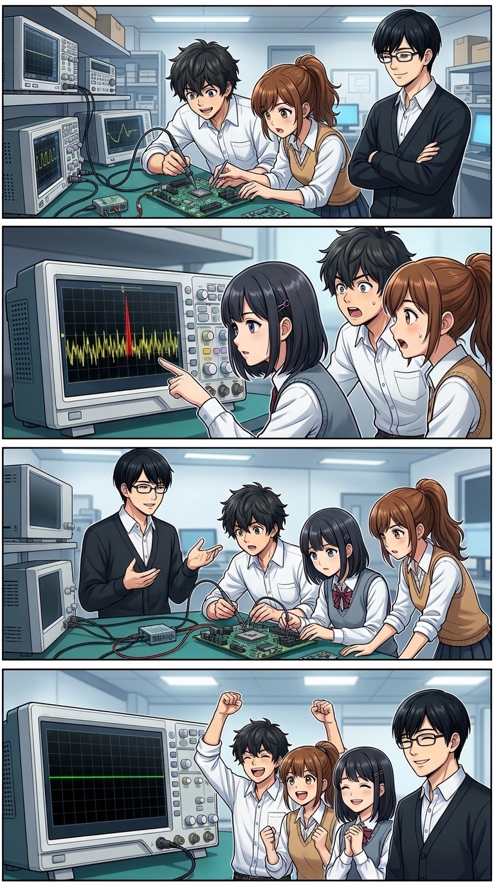
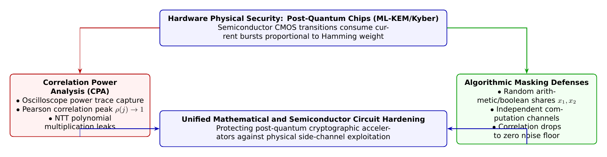

🎨 4コマ漫画挿絵（文字なし）
AI高解像度生成
▲ 【挿絵】青葉台高校 情報科学部＆帝都科学大学サイバーディフェンス・ラボでの実践シーン
💬 4コマ漫画キャラクターセリフ (Story Dialogue Script)
日・英バイリンガル (JA / EN)[葵]「数式上は絶対に解けない頑丈な暗号なのに、流れる電気を見るだけで鍵が分かっちゃうの！？」
[Aoi] "Even with mathematically unbreakable lattice math, can physical electric current reveal the secret key!?"
[結衣]「数千本の波形と鍵候補の中間値の相関係数を計算すると、正解の鍵だけが突出した鋭いピークを示します！」
[Yui] "Calculating Pearson correlation across thousands of power traces causes the true key to spike distinctively!"
[蓮]「消費電流の相関が完全にフラットなノイズの海に消えた！ これならどんなプローブでも覗き見できない！」
[Ren] "Power correlation completely vanished into a flat sea of noise! Physical eavesdropping is rendered blind!"
[全員]「半導体の深淵から暗号の極致まで、私たちはあらゆる漏洩を許さない！」
[All] "From microscopic semiconductor physics to top-layer cryptography, zero leakages are tolerated!"
📖 小説本文
青葉台高校の情報科学部室の一角にあるハードウェア実験ベンチ。金属製のシールドボックスの中に据え付けられたFPGA開発ボードの上で、高速なクロック信号が青いLEDを眩しく明滅させていた。
神崎蓮は微小な差動電流プローブを慎重に操作し、FPGAのコア電源プレーンの直近にあるチップコンデンサの端子へと接触させた。
「……トリガー同期、完了！ サンプリング周波数1GHzでKyber（ML-KEM）の多項式乗算時の電流波形を記録開始！」
オシロスコープの画面に、ギザギザとした無数の電力消費波形が激しい勢いで重なり合っていく。
「ちょっと蓮くん、何を企んでるの？」橘葵が覗き込んだ。「このFPGAって、第18話や第42話でも出てきた耐量子暗号の専用ハードウェアアクセラレータでしょ？ 量子コンピュータでも絶対に破れないはずなのに、なんでオシロスコープで電気を測ってるの？」
「葵先輩、数学の世界では解読に何万年もかかる暗号であっても、それを**現実の半導体チップの上で計算させた瞬間に、物理法則の裏口が開いてしまう**んです」蓮が真剣な眼差しで答えた。
「それが**『サイドチャネル攻撃（Side-Channel Attack）』**だよ、葵ちゃん」
隣の椅子に座っていた城崎悠真が、横浜国立大学SPIRALの松本勉名誉教授（人工物メトリクス・物理セキュリティの世界的パイオニア）や四方順司教授の研究グループが長年リードしてきた論文スライドを開いた。 「今日のテーマは、次世代耐量子暗号のハードウェア実装に対する最強の物理的脅威――**『相関電力解析（CPA: Correlation Power Analysis）』**だ」
白石結衣がホワイトボードにCMOS半導体のインバータ回路を描き出した。 「半導体チップを構成するCMOSトランジスタは、出力が『0から1』または『1から0』へと反転する過渡状態において、キャパシタの充放電電流を一瞬だけ消費します。この消費電流の総和は、レジスタに書き込まれるデータの**ハミング重み（ビット列の中に含まれる『1』の個数）**や**ハミング距離（反転したビット数）**に比例するのです」
---
📊 セキュリティ構造図解 (TikZ LuaLaTeX生成)
国家安全基準・工学図解
▲ 【技術構造図】IPAデジタルスキル標準・国際規格に準拠した仕組みのモデル化